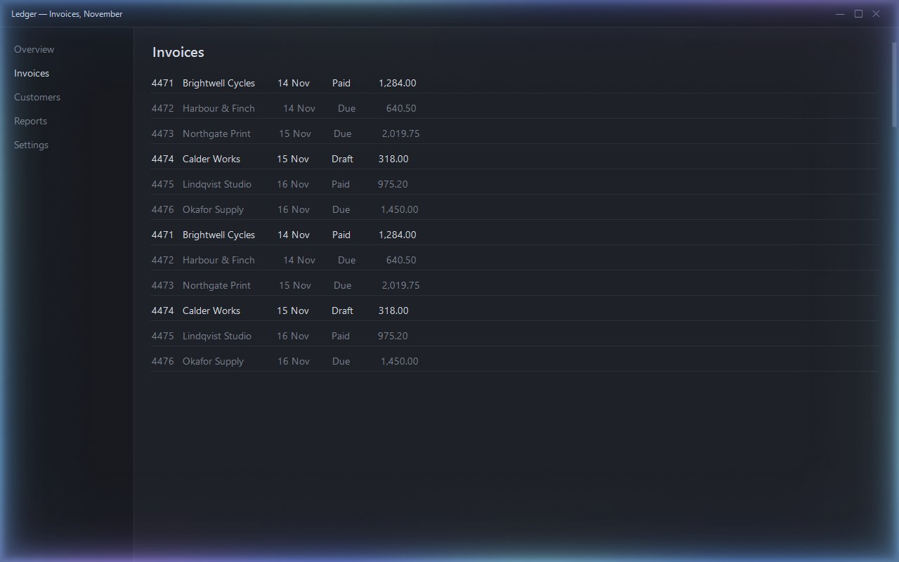
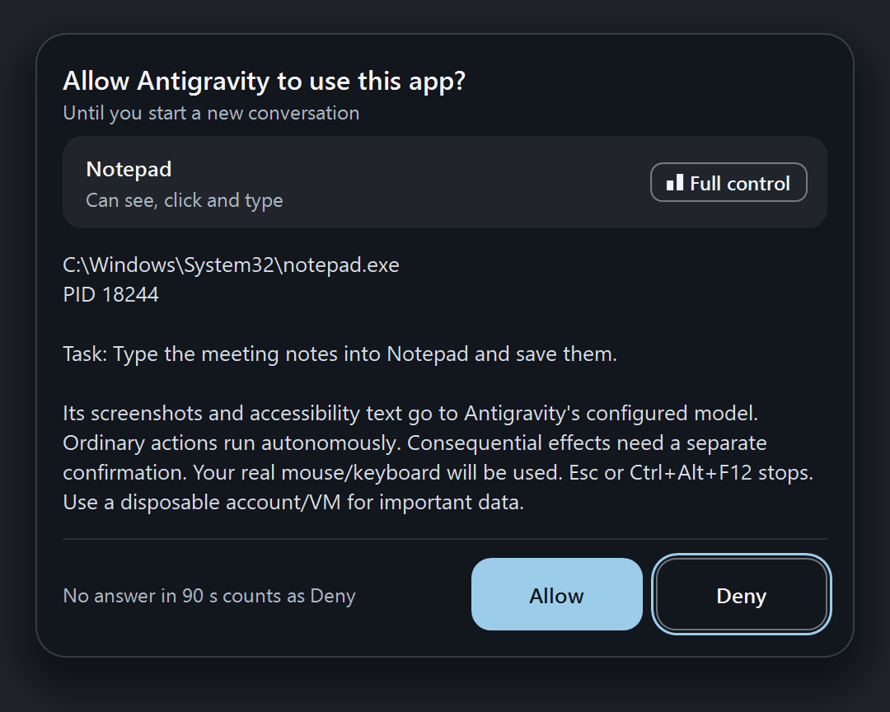
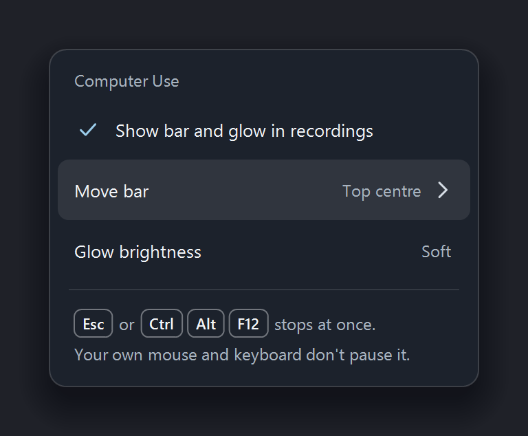

The computer use skill
for Google Antigravity
Type /computer-use and your agent sees the screen, reads each app's accessibility tree and drives real apps on Windows and macOS with your mouse and keyboard. Esc stops it at once.
/computer-use let Gemini 4 Hydrogen paint this in Microsoft Paint. One prompt in Antigravity. The agent drove Paint through a stroke plan scripted from the photo, shown 200× faster. The bar and glow are drawn in, since they're hidden from screen recordings by default.
Look closer
Hover over the painting to see the strokes. Every one was a real drag of the mouse in Paint.


On a phone, tap an image to open it full size.

How it works
One skill and a small local service. It uses the model you already chose in Antigravity: no API key, no second LLM, no MCP server.
Observe
Reads the window's accessibility tree, the names, roles and values of its controls, and takes a screenshot only when a task needs eyes.
Act
Clicks, types, drags and fills in dialogs with the real mouse and keyboard, on the elements it just observed.
Verify
Checks a fresh view after each step. An input whose outcome is uncertain is never sent twice.
What it can do
Use native controls
Click, select, toggle and set values on buttons, fields and lists by name.
Work visually
Click, double-click, right-click, scroll and draw strokes through hundreds of points on a canvas.
Type anything
Unicode text, shortcuts, and paste that puts your clipboard back afterwards.
Work across apps
Launch, find and focus windows, including each app's own file dialogs.
Run long jobs
plan sends many steps at once, so a 30-turn task drops to about 9.
Update safely
Signed releases, automatic updates you can switch to manual, and rollback.
You stay in control
See what it's doing
A small bar always says what the agent is doing right now, and it changes the moment the state does.
A glow on the window it's using
Soft light around the window the agent is working in, so you always know where it is. It's left out of the agent's own screenshots.

It asks before touching an app
Nothing runs without your OK. Terminals and code editors are click-only, so it can't type commands into them.

One key stops it
Esc or Ctrl Alt F12 stops it at once and lets go of every key and button. Sign-ins and admin prompts are always left to you.

Proven on real apps
Not a sandbox and not a browser extension: the agent works in the same desktop apps you do.
Microsoft Paint
The portrait above: exact colours set through Paint's own colour editor, then painted as long strokes with the real mouse.
Upscaly
Open the app, pick a photo in its file dialog and run a 4× upscale. Batching steps cut the turns the model needs.
Private and careful by design
Your data stays yours
- No telemetry. Screenshots go only to the model you already use in Antigravity.
- The glow and bar are left out of the agent's own screenshots.
- Sign-ins, admin prompts and the secure desktop are always handed back to you.
Safe to keep running
- Every release lists a SHA-256 for each archive, and installed copies update only from signed metadata.
- Updates can be switched to manual and rolled back.
- An input whose outcome is uncertain is never replayed.
Platforms
Windows
Windows 10 and 11, x64. One-line install in PowerShell; uses the .NET Framework already on Windows.
macOS
macOS 14 or later on Apple silicon or Intel. You grant Accessibility and Screen Recording once.
Questions
Does it need its own API key or model?
No. It uses the model you already chose in Antigravity. There's no second LLM, no API key and no MCP server to set up.
Does it work with agents other than Antigravity?
It is built and tested for Google Antigravity. The service is driven by a plain command-line tool, so other agents that can run shell commands can call it, but only Antigravity is supported today.
What stops it from doing something I don't want?
It only acts in apps you approve, terminals and code editors are click-only, and Esc stops it at once and releases every key and button. Your own mouse and keyboard never pause it, so stopping is always one key away.
Is it fast?
Most of the time in a long task is the model thinking between steps. plan removes much of that by sending many steps in one command.
Is it open source?
Yes, MIT licensed. It is an independent project, not affiliated with or endorsed by Google.
Install
Each release lists a SHA-256 for every archive in SHA256SUMS.txt, and installed copies update only from signed metadata. Check the archive before you run anything from it.
Windows: download the ZIP and SHA256SUMS.txt, then in PowerShell
$zip = Get-Item .\AntigravityComputerUse-*-windows-x64.zip
$want = ((Select-String -Path .\SHA256SUMS.txt -SimpleMatch $zip.Name).Line -split '\s+')[0]
(Get-FileHash $zip -Algorithm SHA256).Hash.ToLower() -eq $want # must print True
Expand-Archive $zip -DestinationPath .
.\AntigravityComputerUse-windows-x64\install.cmd --integration direct --sidecarmacOS: download the macos-arm64 or macos-x64 archive and SHA256SUMS.txt, then in Terminal
shasum -a 256 -c SHA256SUMS.txt --ignore-missing # must print OK
tar -xzf AntigravityComputerUse-*-macos-*.tar.gzThen run macos-bundle/install.command and Setup.Mac.Permissions.command. Mac guide
Windows, one line
If you'd rather not do it by hand, install.ps1 downloads the same release and checks its SHA-256 before installing anything.
irm https://raw.githubusercontent.com/shayann07/antigravity-computer-use/main/install.ps1 | iexThen try
/computer-use
Open Paint, draw a red circle in the middle, save it to my Desktop as circle.png.